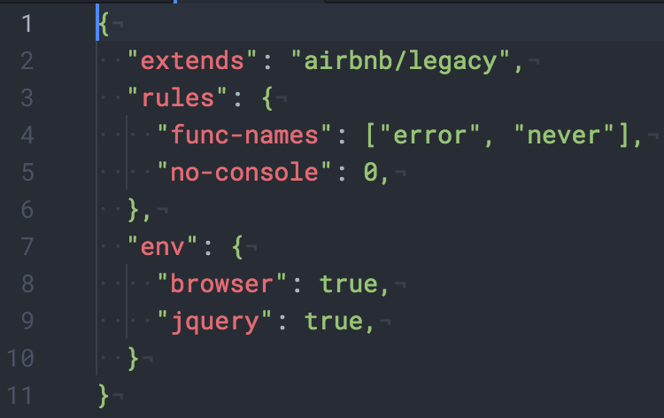

👑  👑
👑

Ismail Arafa is a junior web developer 💻, accomplished musician 🎼, and huge cheese 🧀 fiend.
Based in Toronto, Canada
🍁
💭 Setup Your Macbook Pro To Be More Efficient for Editing Code (For New Web Devs) 💭
Hey hacker friends! It’s l0rdcafé. I fleetingly mentioned the term tech stack in the previous post. Here, we go deeper into that and how to set up a well-organized workflow especially for new web developers on Mac.
- iTerm2
- Homebrew
- Node
- Easier to read manual pages
- Setup your Shell with Prezto
- Faster directory navigation
- Efficient CSS workflow
- Linters and other plugins
- Autoprefixer
iTerm2
If you’re still using the default Mac Terminal, bin that instantly and download iTerm2. Press Cmd-N, instant improvement, right?
iTerm2 unlike Terminal, is very customizable. So give the preferences a look and toy with the colors. Additionally, you can download preset color schemes.
Homebrew
Before you go any further, you should install Homebrew. It’ll give you quick access to a plethora of software by running simple commands, dubbed as the missing package manager for macOS. Copy/paste the command into your terminal.
Node
Up next is Node, which after installing Homebrew becomes a much simpler task. Run brew install node. Now, run node -v to see if it’s installed, and then also npm -v. If it is, you should see something similar to this.

Easier to read Manual Pages
If you know some basic UNIX command line and know about the man pages, which are notoriously dizzying to read, then you should start off by installing tldr. Simply run sudo npm install –g tldr, then run tldr echo to see if it works. The sudo prefix might not be necessary, depending on your admin preferences. But if you run the command without it and returns an error, then it will be.
Shell Setup with Prezto
The default Shell is .bash, which isn’t necessarily the most efficient. You can tell which Shell is running by looking at the top of your terminal window.

That’s where Prezto comes into play, a .zsh framework enriching the command line interface with aliases, sane defaults, prompt themes and most importantly auto completion; a true savior!
Run zsh to start a .zsh session and follow the installation instructions carefully.
As with most things, you’ll need to customize your Prezto modules. So go to your home directory by running cd, then run ls -a and check to see if there’s a .zpreztorc. If there is and there should be, open that file in your text editorand make sure the modules from line 26 to 44 are in the following order.

Faster Directory Navigation
Moreover, if you’ve used the cd command enough, you’ll know how consuming directory navigation can be. Run brew install fasd and now you can use the command j with any directory that you’ve visited before as its argument to navigate instantly there. Here’s an example of it in action.

Efficient CSS Workflow
Writing CSS can be a pain when you have to refresh the page on your browser with each saved change. That’s why browser-sync exists, run sudo npm install –g browser-sync, then tldr browser-sync (Aha!) for examples on how to use it.

Linters and Text Editor Plugins
Now it’s time to upgrade your text editor. Personally, I picked Atom at the start and have been using it ever since, so this is going to be catered to that but feel free to look up equivalent upgrades for whatever text editor you end up choosing. Linters are packages installed in a text editor that, given specific settings will clean up your code and pick up on any syntax errors. This is a pretty long list, since you have to install linters for each language. However, I highly advise against copy/pasting and to actually type in each command.
apm install linter-csslint
apm install linter-htmlhint
apm install linter-jsonlint
apm install linter-scss-lint
apm install linter-markdown
apm install linter-eslint
apm install linter-stylefmt
apm install linter-write-good
apm install atom-beautify
apm install git-diff
apm install jquery
apm install pigments
apm install file-type-icons
apm install open-recent
You will need to customize some of these plugins. Firstly, create a ~/.eslintrc file and write the following in it.

Then your beautify settings should match those in the following image.

You’ll also need to tick the box for Use global ESLint installation as well as specify the .eslintrc Path to the ~/.eslintrc file created earlier. You can implement these changes in the linter-eslint plugin settings as shown below. Additionally, you should run npm get prefix and input the result into the Global Node Installation Path box.

Autoprefixer
Beyond linters, an autoprefixer will be your new best friend. You’ll never have to hardcode vendor prefixes again. By simply running apm install autoprefixer and setting it to prefix on save, you can simply code, save and vendor prefixes will be prefixed automagically.
That’s it for the web developer starter pack. These tools will help you establish an efficient workflow and save you time and cognitive load to work on other less trivial issues as opposed to figuring out vendor prefixes for random properties.
April 27, 2017